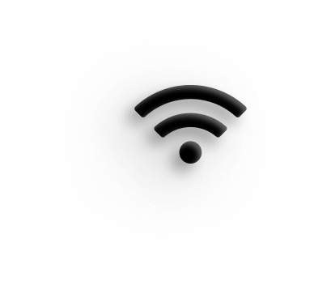

Create your Unique avatar
HearAid uses AI to understand sounds and create a video depicting actions creating the sound
HearAid uses AI to understand sounds and create a video depicting actions creating the sound

Watch sounds as videos, choose qualities and edit videos as you like
Set HearAid To Automatically start listening when someone starts talking close to you, or when a particular sound is around the user .the user can manually record sounds at any time to be simulated